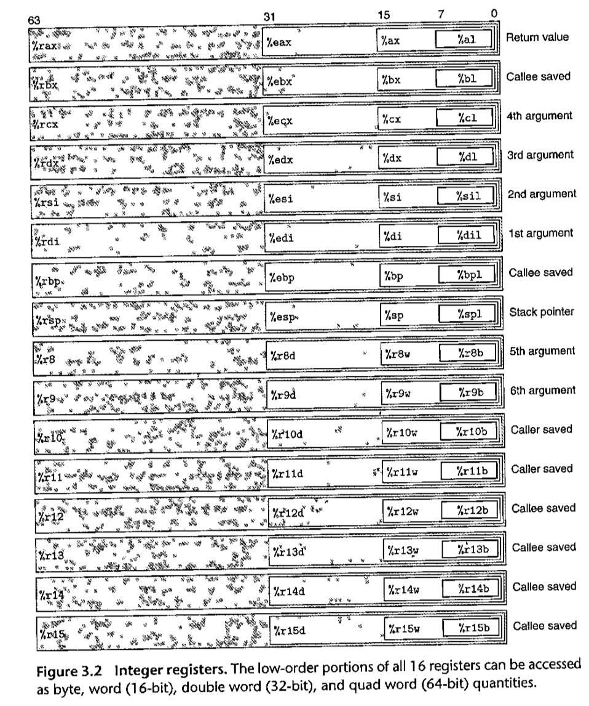

该笔记用于记录学习CMU15213时遇到的知识点
Chapter 2 Representing and Manipulating Information
寻址与字节顺序
根据操作系统的不同，硬件存储数据的方式也可能不同，具体可以分为两派：”little endian” and “big endian”
这两个词语的来源是格列佛游记里面对一个无关紧要的问题的引用，出处所争执的是剥鸡蛋应该从大端剥还是小端剥；而在计算机数据存储这里，所争论的是数据应该从高位向低位存储，还是应该从低位向高位存储，同样是一个无关痛痒的问题
之后，课本里面针对这个问题写了一段C代码，输出数据的内部存储形式(也就是十六进制数据)
因为自己的C语言功底不是很扎实，于是找来了”Expert C Programming: Deep Secrets”这本书，就其中第四章的内容”The Shocking Truth: C Arrays and Pointers Are NOT the Same!”进行学习
Expert C Programming
Difference between definition and declaration
前者表示定义，用于创建对象时使用，只能出现在一个地方，它为对象分配内存；后者表示声明，用于指代其他地方定义的对象
数组和指针的区别
对于数组，在编译时就可以确定该变量的地址，因此如果对数组进行下标操作，那么仅需两步就可以得到期望的结果：
- 将数组首地址与偏移地址相结合，得到目标地址
- 取出目标地址的内容
但是对于指针，由于分配的内存只能在运行时确定，因此需要三步才可以达到相同的功能：
- 取出指针所指向的数组首地址
- 将数组首地址与偏移地址结合得到目标地址
- 取出目标地址的内容
正是由于两者内部的不同，使得声明和定义如果类型不匹配，就会得到出乎意料的结果
1 |
|
在学习过上面的知识点之后明白了，如何解读“通过将各种类型的地址使用(unsigned char*)进行强制转换为序列数组之后，就可以得到其具体的存储方式”。这是因为(unsigned char)的大小是1字节，最小的数据类型，因此进行强制类型转换之后，通过该类型自带的偏移量就可以对任意数据类型的内部存储进行拆分观察。
这里记录一下对size_t的思考
后面的t，可以理解为type的缩写，该类型用于表示对象内存大小，是一个很大的非负数
malloc, sizeof等涉及到内存大小的默认都会使用这种数据类型
Logical & Arithmetic bit shift
无论是逻辑左移还是算术左移，填充的元素都是0
对于逻辑右移，填充的元素是0；这对于无符号数是特别方便的，因为右移的时候，最高位必须是0
对于算术右移，填充的元素随最高位的变化而变化，适用于有符号数
由于补码的一种定义为$[b_{n - 1}…b_2b_1b_0]补 = -2^{n-1} + \sum{i=0}^{n-2}2^i$
因此如果对负数采用逻辑右移，将会得到一个正数，这是违背常理的；正确的做法是在最高位填充1，如此依赖就可以在保持负号的同时不修改原数值
Chapter 3 Machine-Level Representation of Programs
Access Information

上图列举了十六个整数寄存器的信息，每个寄存器的名称均由%开头标示。在目前流行的64位机器上，由于存在访问低位内存的需求，所以仍然支持历史版本的寄存器，具体信息可以在图中观察到。
与之相应的，也就产生了一套对应的指令集，此处以move举例表明是如何匹配的。
move指令的源操作数可以是立即数、寄存器、内存地址；而目的操作数可以是寄存器或内存地址。
按照二进制位数，将寄存器的大小划分为了byte, word, long word, quad word；取每个单词的第一个字母，也就出现了moveb, movew, movel, moveq这四条数据传送指令。在x86-64体系系统中加了一条限制，传送指令的两个操作数不能都指向内存地址(如果需要这样的数据传送，必须使用两条传送指令，以一个寄存器作为中介进行数据传送)。因此这就保证了数据传送指令的两个操作数必定有一个是寄存器。至于具体应该使用四个move指令的哪一个，就是要看操作数中的寄存器的大小，来进行选择。
the size of the register must match the size designated by the last character of the instruction (‘b’, ‘w’, ‘l ‘, or ‘q’).
也就是说，只要是move指令中操作数上面的寄存器，就必须与move指令最后一个字符规定的大小匹配。
另外需要注意下面这一点
For most cases, the Mov instructions will only update the specific register bytes or memory locations indicated by the destination operand. The only exception is that when movl has a register as the destination, it will also set the high-order 4 bytes of the register to 0, This exception arises from the convention, adopted in x86-64, that any instruction that generates a 32-bit value for a register also sets the high-order portion of the register to 0.